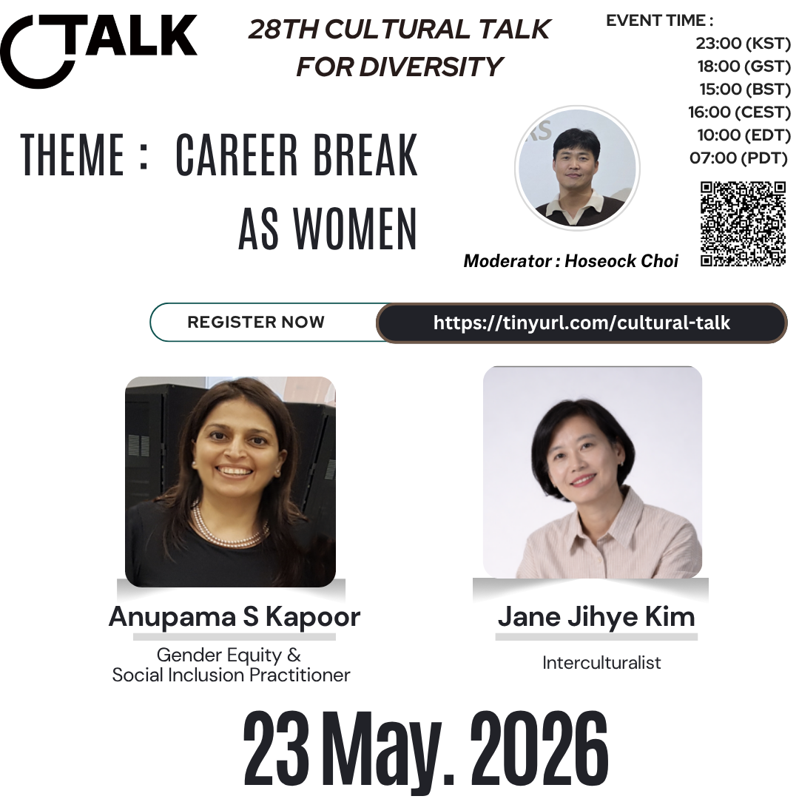
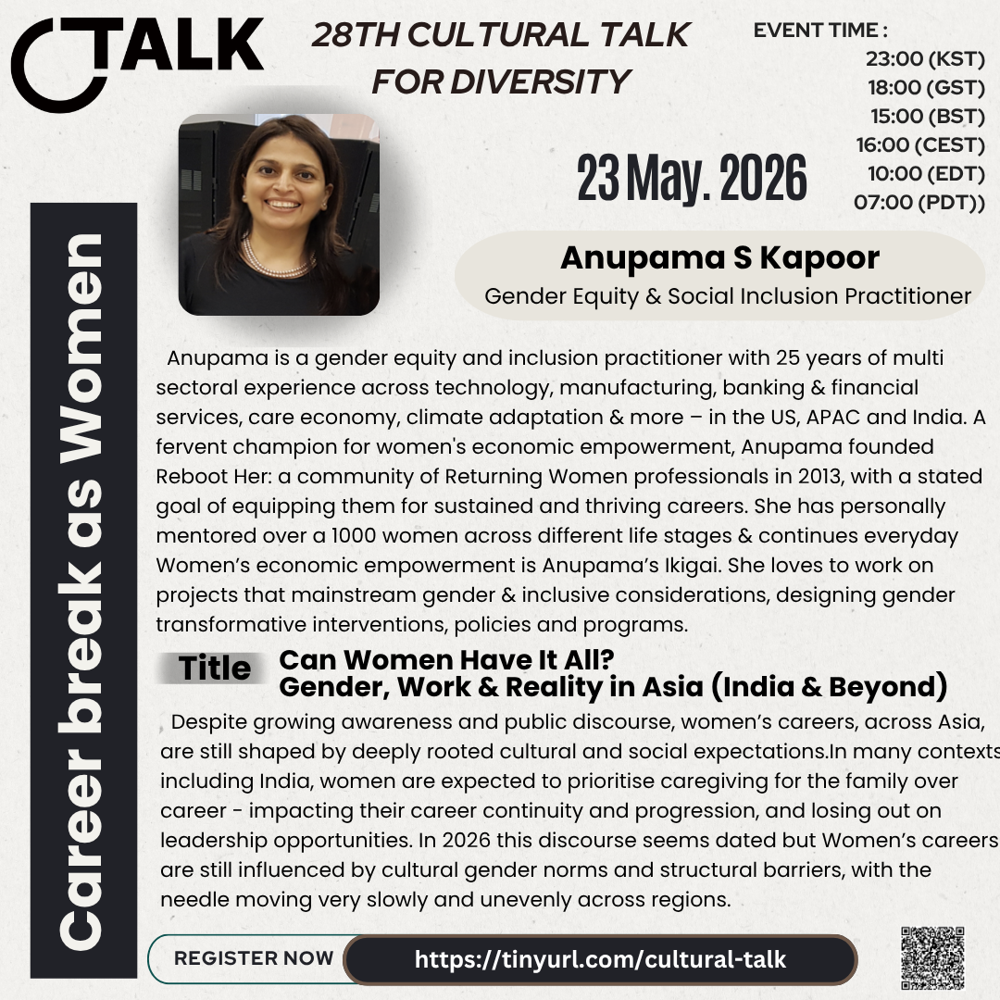
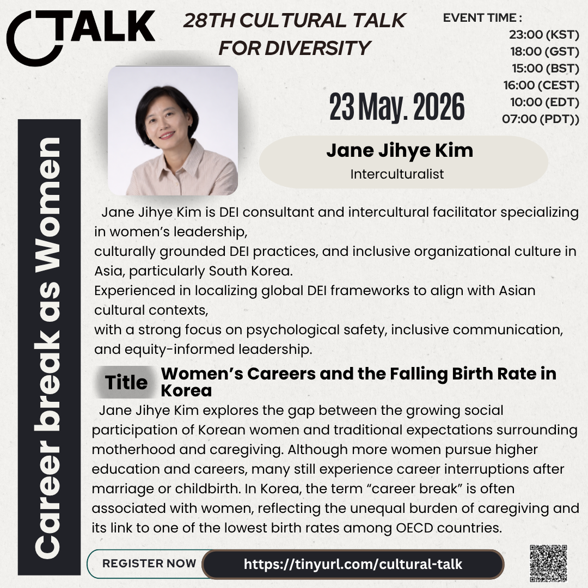

28th Cultural Talk For Diversity
Theme: Career Break as Women

Event Details
Date: 23 May 2026
Time: 23:00 (KST) / 18:00 (GST) / 15:00 (BST) / 16:00 (CEST) / 10:00 (EDT) / 07:00 (PDT)
Conference Overview
The 28th Cultural Talk looks at career breaks through the lens of gender, work, and everyday realities across Asia. With two speakers joining the conversation, this session will explore how cultural expectations around care, family, work, and leadership continue to shape women's career continuity and choices.
Anupama S Kapoor will bring a broader Asian perspective, including India and beyond, while Jane Jihye Kim will focus on Korean women's careers and the social context around care, marriage, childbirth, and the falling birth rate. Together, the talks invite a grounded and thoughtful conversation about what career breaks mean across different cultural settings.
Speaker Details
Anupama S Kapoor

Role: Gender Equity & Social Inclusion Practitioner
Topic: Can Women Have It All? Gender, Work & Reality in Asia (India & Beyond)
Anupama is a gender equity and inclusion practitioner with extensive experience across technology, manufacturing, banking and financial services, care economy, climate adaptation, and other sectors in the US, APAC, and India. She founded Reboot Her, a community for returning women professionals, and has mentored women across different life stages.
Her talk will examine how women's careers across Asia are still shaped by deeply rooted cultural and social expectations. In many contexts, caregiving responsibilities and gender norms continue to affect career continuity, progression, and leadership opportunities, even as public awareness grows.
Jane Jihye Kim

Role: Interculturalist
Topic: Women’s Careers and the Falling Birth Rate in Korea
Jane Jihye Kim is a DEI consultant and intercultural facilitator specializing in women's leadership, culturally grounded DEI practices, and inclusive organizational culture in Asia, particularly South Korea. Her work focuses on localizing global DEI frameworks and supporting psychological safety, inclusive communication, and equity-informed leadership.
Her talk will explore the gap between Korean women's growing social participation and the traditional expectations surrounding motherhood and caregiving. It will connect career interruptions after marriage or childbirth with the unequal burden of caregiving and Korea's low birth rate context.
Related Coverage
No follow-up coverage has been linked yet. News, podcast, or other result links can be added here later after the conference.